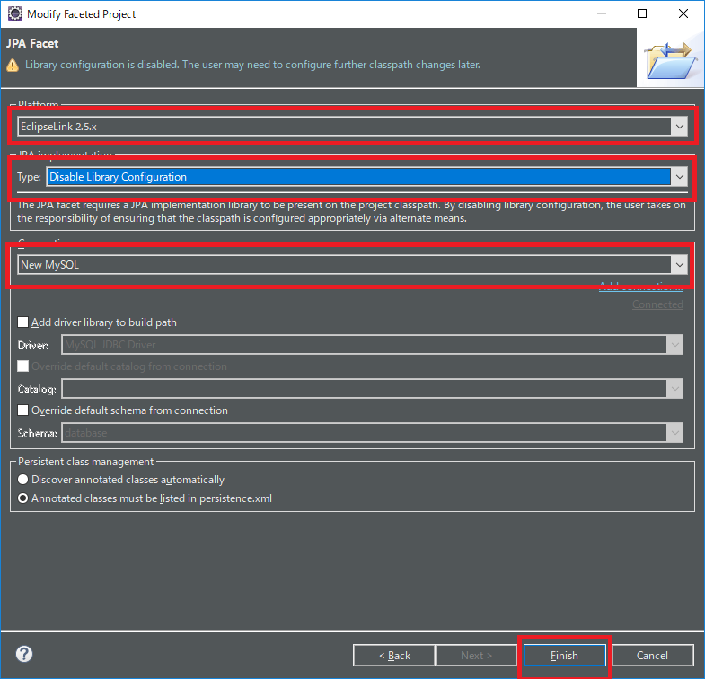

こんにちは。明月です。
このページは「Eclipse」で「JPA」設定する方法に関して調べてみました。
「Java」プログラムでデータベースのコネクション管理するフレームワークがあります。そのフレームワークを我々は「ORM(Object-relational-mapping)」といいます。
以前、ORMフレームワークを使わなかった時、または使用頻度が少なかった時にはプログラムで直接に「SQL Connection」を組み立てて「SQLクエリ」を作成してデータベースからデータを受け取りました。
そのように作成するとプログラム管理工程で様々な問題が発生しますね。
例えば、データベースのテーブルの内容が変更された場合、「SQLクエリ」を作成したソースを全て修正しなければならないです。
そして「SQLクエリ」を「String」タイプで作りますので、コンパイルエラーにも出ないので、SQL検証がずいぶん大変になります。その工数に関してもプロジェクトが大きいほど、多くなるし、リスクも高くなりますね。
またの他の問題は「Reference」管理です。「SQL」クエリ上でテーブル間に「Join」してデータを受け取ります。でも「Join」や「Select」するデータよりクラスを組み込むのが難しいし、クラスをたくさん生成する可能性があるので、管理が難しくなります。
個人的にこの２つの問題を解決して「Database」のツリー構造のデータベースの形式をクラスタイプの連結リストタイプに変換するフレームワークがこの「ORM」フレームワークです。
「Java」で「ORM」フレームワークの種類は多いです。「Hibernate」もあるし、「Doma」の「Seasor」もあります。私の場合は昔「ibatis」というフレームワークも使ったことがあります。
でもいつからか「Java」側で「JPA」が「Java」の標準「ORM」に決めて最近の「Java IDE」ツールで簡単に使えるように「JPAフレームワーク」を支援しています。
それなら、「maven」プロジェクトを作成して「JPA」を立ち上げます。
link - [Java スタディ - 32] Mavenをインストール、使用方法、そしてeclipseに連結する方法
「pom.xml」で２つのライブラリを連結します。
<!-- https://mvnrepository.com/artifact/org.eclipse.persistence/org.eclipse.persistence.jpa -->
<dependency>
<groupId>org.eclipse.persistence</groupId>
<artifactId>org.eclipse.persistence.jpa</artifactId>
<version>2.5.2</version>
</dependency>
<!-- https://mvnrepository.com/artifact/mysql/mysql-connector-java -->
<dependency>
<groupId>mysql</groupId>
<artifactId>mysql-connector-java</artifactId>
<version>5.1.41</version>
</dependency>

一番目の「dependency」は「JPAライブラリ」です。二番目の「dependency」は「mysql-connector」です。
私の場合は「mariaDB(mysql)」をよく使いますが、他のデータベースを使いたいんらこの「connector」ライブラリだけ変更するとできます。
「project」で「jpa project」で変換します。

「Platfrom」と「connection」を設定します。


そして「add connection」リンクを押下します。以前に「eclipse」で「mariaDB(mysql)」を接続したことがなければ設定しなければならないです。
「connector」の場合は上の「maven」で「update」をすれば「maven repository」ディレクトリにあります。
別に「maven」設定をしなかったら、「c:\UserArea\Window ID\.m2\repository\mysql\mysql-connector-java\5.1.41」であります。

そして連結確認をした後「Finish」を押下すると「src\META-INF\persistence.xml」が生成されています。
今回はデータベースにテーブルを生成して連結してみましょう。
use test;
drop table info;
drop table user;
create table user(
id varchar(255) not null,
name nvarchar(255) not null,
primary key(id)
);
create table info(
idx int not null auto_increment,
id varchar(255) not null,
age int not null,
primary key(idx),
foreign key(id) references user(id)
);
次は「persistence.xml」で戻ってきてコネクション情報を入力します。
<?xml version="1.0" encoding="UTF-8"?>
<persistence version="2.1"
xmlns="http://xmlns.jcp.org/xml/ns/persistence"
xmlns:xsi="http://www.w3.org/2001/XMLSchema-instance"
xsi:schemaLocation="http://xmlns.jcp.org/xml/ns/persistence http://xmlns.jcp.org/xml/ns/persistence/persistence_2_1.xsd">
<persistence-unit name="JpaExample">
<properties>
<!-- キャッシュ機能。これが「true」になっているとこのフレームワークを通ってないクエリの場合は反映が遅くなる。 -->
<property name="eclipselink.query-results-cache" value="false" />
<property name="eclipselink.logging.level" value="INFO" />
<property name="eclipselink.logging.parameters" value="true" />
<property name="javax.persistence.jdbc.driver" value="com.mysql.jdbc.Driver" />
<!-- database -->
<property name="javax.persistence.jdbc.url" value="jdbc:mysql://localhost:3306/test" />
<!-- 接続id -->
<property name="javax.persistence.jdbc.user" value="id" />
<!-- 接続password -->
<property name="javax.persistence.jdbc.password" value="password" />
</properties>
</persistence-unit>
</persistence>
xml設定を終わるとこれからエンティティクラスを作りましょう。

これまで出来たら実際データベースからデータを持ち来ます。
insert into user (id,name) values('nowonbun','Hello');
insert into info(id,age) values('nowonbun',20);
public class Main {
public static void main(String... args) {
//FactoryManagerを生成する。「JpaExample」は「persistence.xml」に宣言した名だ。
EntityManagerFactory emf = Persistence.createEntityManagerFactory("JpaExample");
// Managerを生成する。
EntityManager em = emf.createEntityManager();
// Userテーブルで「nowonbun」UserのIDを持ち来る。
User user = em.find(User.class, "nowonbun");
System.out.println(user.getName());
// Userテーブルで連結しているInfoテーブルのデータを持ち来る。
List
infos = user.getInfos();
for(Info info : infos) {
System.out.println(info.getAge());
}
}
}
ここまで基本「JPA」設定が完了しました。
添付 -  JpaExample.zip
JpaExample.zip
基本JPA設定は完了しましたが、実際にプロジェクトで使うようには様々な設定が必要です。JPAの設定に関しては次の投稿で連結して調べましょう。
- [Java] Java servletでインスタンスを初期する方法2019/10/17 07:15:48
- [Java] Spring web frameworkで発生する文字化けのEncoding設定2019/10/16 07:32:55
- [Java] Web Spring frameworkでfilter設定2019/10/15 20:12:35
- [Java] Web serviceのweb.xmlでエラーページ設定2019/10/14 20:13:44
- [Java] JPAのDAOをFactoryパターンで管理する方法2019/10/13 22:55:52
- [Java] JPAのSpring frameworkで依存性注入する方法2019/10/13 00:40:08
- [Java] JPAでDAOを生成する方法2019/10/11 07:30:14
- [Java] JPAでトランザクションの使用方法とオブサーバーパターンで共通トランザクション関数を作り方2019/10/10 07:29:43
- [Java] JPAのQuery を作り方2019/10/09 07:34:08
- [Java] JPAのEntityクラス設定(Cascade, fetch)2019/10/08 07:43:33
- [Java] JPAでpersistance.xml設定とentityクラス設定(@GeneratedValue設定)2019/10/07 07:38:13
- [Java] EclipseでJPAフレームワーク設定する方法2019/10/04 19:24:43
- [Java] Web spring frameworkのJSPで使う言語 JSTL - XML2019/10/03 20:02:06
- [Java] Web spring frameworkのJSPで使う言語 JSTL - 関数、データベース2019/10/02 21:00:22
- [Java] Web spring frameworkのJSPで使う言語 JSTL - コアー、フォーマッティング2019/10/01 21:48:08
- [PHP] PHPのCakeからAjax要請がある時、jsonタイプ(json_encode関数)でResponseする方法とControllerでViewを選択する方法2020/02/08 03:00:00
- [CakePHP] MVCフレームワークのCakeをインストールする方法2020/02/07 03:00:02
- [PHP] 自動require及びincludeをする方法(spl_autoload_register)2020/02/05 03:00:00
- [PHP] 匿名関数(ラムダ式)とクロージャ(closure)2020/02/04 03:00:00
- [PHP] PHPのコーディング領域とデザイン領域を分離するテンプレートライブラリ Smarty2020/02/02 03:00:00
- [PHP] Reflection - Variable編2020/02/01 03:00:00
- [PHP] Reflection - Method編2020/01/31 03:00:00
- [PHP] Reflection - Class編2020/01/30 03:00:00
- [PHP] エラーページ処理方法(追加: ob_cleanとdie関数使用方法)2020/01/29 03:00:00
- [PHP] 分散設定ファイル(.htaccess) 使用方法2020/01/28 03:00:00
- [PHP] データベース(mariaDB)を連結して使う方法2020/01/24 03:00:00
- [PHP] IOに関して2020/01/23 03:00:00
- [PHP] requireとinclude、そして「@」の使用方法2020/01/22 03:00:00
- [PHP] Fatal及びNotice,、Warningメッセージ処理する方法2020/01/19 03:00:00
- [PHP] xDebug設定する方法2020/01/18 03:00:00